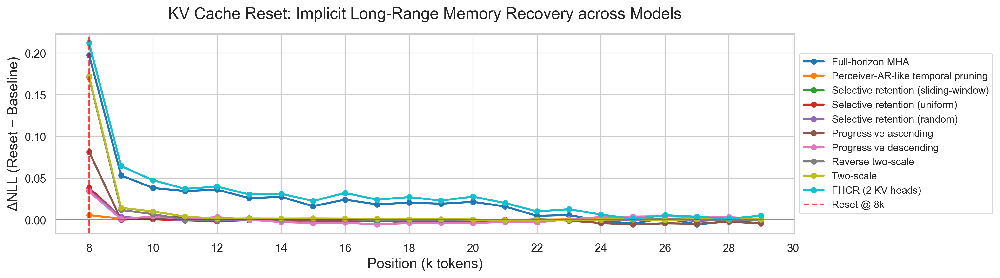
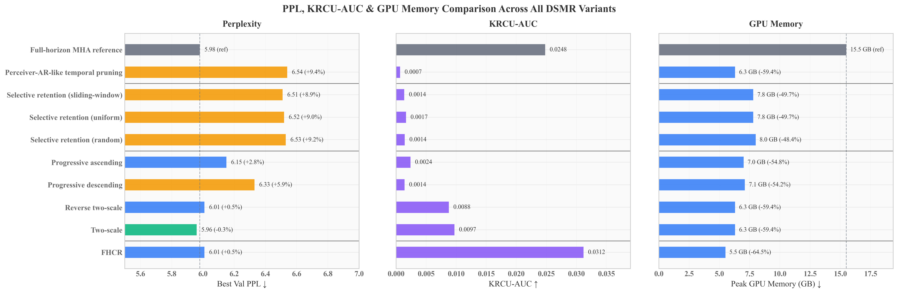

Whole-piece training
Keep each composition continuous
Complete musical works remain continuous training sequences while computation is streamed through shorter recurrent segments.
Preserve the horizon. Compress the representation.
Auckland University of Technology · University of Tasmania
Competitive perplexity does not necessarily imply functional use of distant musical context. Temporal memory pruning can preserve aggregate prediction quality while substantially weakening long-range dependence. FHCR instead preserves the full recurrent horizon and reduces the cost of representing that history.
Complete musical works remain continuous training sequences while computation is streamed through shorter recurrent segments.
KV-Reset Context Utilization evaluates how future-token likelihood changes after recurrent KV state is reset at a controlled boundary.
Full-Horizon Compressed Recurrence preserves all recurrent positions while reducing KV representation cost using grouped-query attention.
After an 8k-token KV reset, full-horizon models retain a persistent prediction penalty, whereas many temporal-pruning models recover rapidly.


For computational efficiency, modern language models are typically trained on independently sampled fixed-length sequences. Symbolic music language models largely inherit this paradigm, despite musical structure naturally unfolding over complete compositions rather than isolated excerpts. Fragmenting compositions into independent training instances therefore prevents continuous conditioning over the complete work.
We present a practical framework for whole-piece training of symbolic music language models via Full-Horizon Compressed Recurrence (FHCR). FHCR preserves the full temporal horizon of recurrent memory while reducing its representation cost along the key-value representation dimension, making continuous whole-piece training practical under limited GPU memory.
To directly assess functional long-range dependence, we introduce KV-Reset Context Utilization (KRCU), an evaluation-time diagnostic. On the MAESTRO symbolic piano dataset, KRCU shows that full-horizon models utilize context far beyond the local segment window, whereas reducing the temporal extent of recurrent memory substantially weakens this measurable long-range dependence. FHCR preserves long-range context utilization while substantially reducing recurrent memory cost.
@article{yi2026wholepiece,
title = {Whole-Piece Training for Symbolic Music Language Models via Full-Horizon Compressed Recurrence},
author = {Yi, Yungang and Li, Weihua and Kuo, Matthew and Shi, Catherine and Bai, Quan},
year = {2026}
}